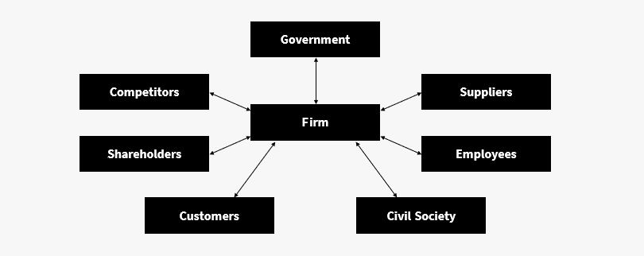

The key to effecting drastic change in any mature industry is a deep understanding of stakeholders, their power, and their willingness to change. Of course, no one stakeholder can do this on their own. However, the following four are the most likely to drive the change in the future. Having forward looking Governments, Civil Society, Customers, and Shareholders will be the key to a company succeeding over the next two decades. The core of our analysis was identifying the groups that had the most power and the starkest difference in concern right now versus when the unsustainable practices come to fruition.
Although the government yields plenty of power, they have opted to support the livestock industry rather than ready them for the coming decades. We believe that when the resource issues are realized the government will face this unfortunate reality and demand change in the industry. While the government does wield outright power, their allegiances and the influence of lobbying will hinder their ability to address this issue. For this reason, they only have the second greatest power behind the customers but they do hold the greatest difference in concern over time alongside shareholders.
Including NGOs, Civil society will imperative to change over the next 20 years. Holding the greatest concern, this group has already made strides to advocate for a more sustainable outlook on the industry. Likely, any solution will incorporate at least one of these organizations. Unfortunately, they most likely do not have the power to win this war on their own.
While Customers undoubtedly hold the power to unilaterally change the habits of these companies, they have shown a propensity to allow these unsustainable practises to persist due to the economic benefit they receive. Simply put, customers don’t care enough to change their preferences and it has allowed the industry to thrive. Fortunately, there does not need to be a full overhaul of consumer perception in order to reach greener pastures. Rather, there needs to be a solution that fits consumer wants and needs.
Shareholders are happy to maintain the status quo if it remains feasible. However, the premise of this argument is that it will become economically infeasible. For that reason, we believe that this stakeholder will have the highest concern in the future. This combined with their ability to create change, it is very likely that this group leads a charge in this industry. This bodes well for those who want to see change in the industry.